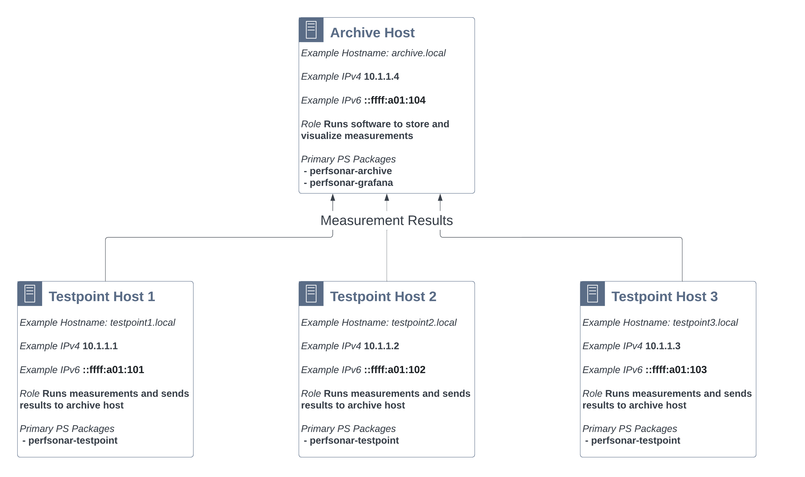
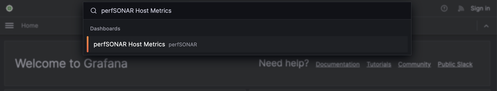
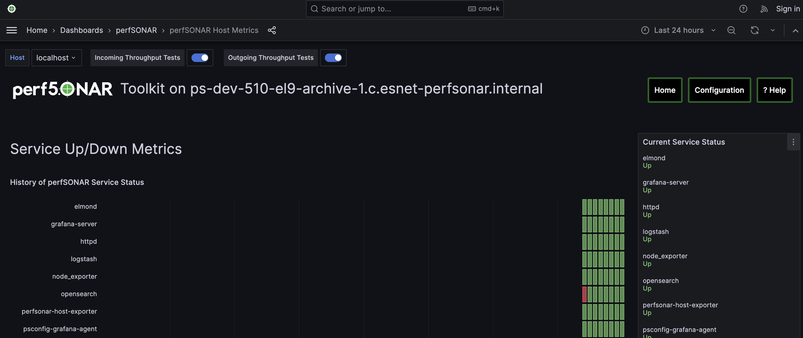
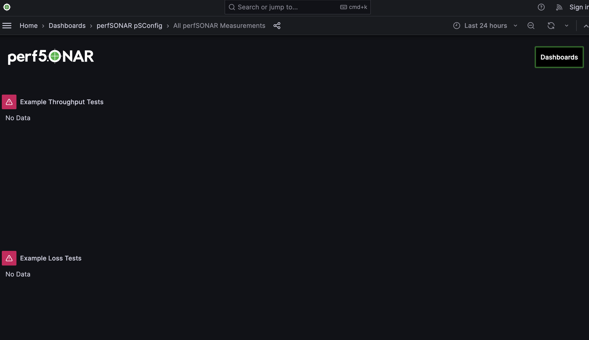
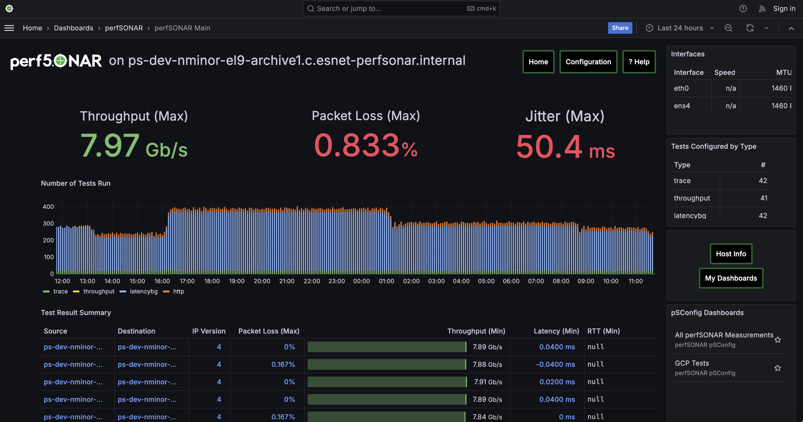

Central Archive with Grafana Cookbook¶
This guide walks-through a standard perfSONAR setup where there are multiple perfSONAR Testpoint hosts writing measurements to central archive from which results can be displayed.
This guide will assume a setup that looks like the following:
{kind=link}
This setup has two types of hosts:
Archive Host - A single host where all measurements are stored. In this setup it also runs Grafan for visualizing results.
Testpoint Hosts - Multiple hosts that run measurements and send the results to the Archive Host. In this example there are three hosts, but there can be more (or less) in your own setup.
Note
Hardware requirements for each type of host will vary. Generally the archive host will need more hardware resources than the testpoint. Much of it depends on how many tests you plan to run. See Hardware Requirements.
Note
perfSONAR supports many variations on the architecture above (e.g. Grafana on a different host, running a mixture of Toolkits and testpoints, and many more). This guide strictly focuses on a central archive setup with multiple testpoints for simplicity, but feel free to adapt this guide to your own needs.
Step 1: Setup the perfSONAR Archive for Storing Measurements¶
In this step we’ll setup the archive host store measurements. Specifically we’ll use the perfsonar-archive package to install and setup Logstash and OpenSearch. Follow the steps below:
Login via SSH or similar to the command-line of your archive host.
Become a user with root privileges. You can do this using sudo:
sudo -s
Run the personar install script to setup the package repositories and install the perfSONAR archive. The command will automatically detect the operating system and install the correct packages:
curl -s https://raw.githubusercontent.com/perfsonar/project/master/install-perfsonar | sh -s - archive
Let’s quickly verify the archive is running with the psarchive troubleshoot utility. It will check that components such as OpenSearch and Logstash are running as well as verify authentication credentials. It can also check if the archive has data, but since we have not yet configured our measurement hosts we will skip that check with the –skip-opensearch-data option. Run the command as follows and if everything is marked as OK then proceed, otherwise follow the instructions in the command output to debug:
psarchive troubleshoot --skip-opensearch-data
Next we’ll setup IP authentication so that the testpoint hosts will be able to send their results. This verification is handled by the Apache proxy in front of Logstash. We are going to edit /etc/httpd/conf.d/apache-logstash.conf (Rocky/Alma) or /etc/apache2/conf-available/apache-logstash.conf (Debian/Ubuntu) to include the example IPs (see the diagram at the top of this guide). Note we’ll add both the IPv4 and IPv6 addresses to make sure the host can authenticate via either protocol. The following is what we setup for the example (the Require ip lines are the relevant portions):
<IfModule proxy_module> ProxyRequests Off <Proxy *> <IfVersion >= 2.4> Require all granted </IfVersion> <IfVersion < 2.4> Order deny,allow Allow from all </IfVersion> </Proxy> ProxyPass /logstash http://localhost:11283 status=+I ProxyPassReverse /logstash http://localhost:11283 status=+I ProxyPreserveHost On <Location /logstash> Authtype Basic Authname "Logstash Pass" AuthUserFile /etc/perfsonar/opensearch/logstash_login <RequireAny> ################## ## Require a valid username and password Require valid-user ################### ## Enable IP based or hostname authentication as an alternative to username/pass ## The RequireAny means that as long as one of these match then writing will be allowed ## There are are many options, some of which are shown below but for full docs see ## https://httpd.apache.org/docs/2.4/howto/access.html ## Require ip 10.1.1.0/24 Require ip ::ffff:a01:100/120 </RequireAny> </Location> </IfModule>
Restart apache to apply the changes above. This command is OS dependent:
RedHat-based (e.g. Rocky, Alma):
systemctl restart httpdDebian/Ubuntu:
systemctl restart apache2
We now have a host capable of storing results. We are now ready to setup Grafana so we’ll be able to visualize results.
Step 2: Setup Visualization with Grafana¶
Now that the host can store measurements, let’s prepare to visualize them. You should perform all of these steps on the archive host. Let’s begin:
The first step is to install a group of packages we’ll need to finish the setup. The commands are OS-dependent:
RedHat-based (e.g. Rocky, Alma):
dnf install perfsonar-grafana perfsonar-grafana-toolkit perfsonar-psconfig-hostmetrics perfsonar-psconfig-publisherDebian/Ubuntu:
apt install perfsonar-grafana perfsonar-grafana-toolkit perfsonar-psconfig-hostmetrics perfsonar-psconfig-publisher
Let’s verify Grafana is running. Open https://ARCHIVE_HOSTNAME/grafana in your browser where ARCHIVE_HOSTNAME is the name of your archive host. In this example it would be https://archive.local/grafana. You’ll see a default Grafana page without much useful information at this point.
Navigate to the perfSONAR Host Metrics page by typing “perfSONAR Host Metrics” in the search bar:
You should get a page that looks like the following. Some of the fields will not be filled-in since they only apply to perfSONAR hosts running measurements, but you should see service status, CPU stats, memory stats, etc. You can adjust the time range to zoom-in since it defaults to 24 hours. This can also be helpful to check that all the relevant services are running. See example below:

We now have a working Grafana installation. For now there is not much to show beyond host statistics, but we will revisit this after we have the measurements running. In the next step, we’ll define the measurements to run.
Step 3: Creating Your Measurement Configuration with pSConfig¶
In this step we’ll create a file that defines the measurements we want all the testpoints to run. This is called a pSConfig Template File. If you want to learn more about pSConfig templates see What is pSConfig?. In this example we’ll generate the file by hand from a skeleton file then use some helpful utilities to fill-in and publish. Steps are as follows:
Create a directory where you will edit the templates:
mkdir ~/psconfig_templates cd ~/psconfig_templates
Download the “skeleton” file which we will use as the starting point for our pSConfig template:
curl -o psconfig.json https://raw.githubusercontent.com/perfsonar/psconfig/master/psconfig/perfsonar-psconfig/doc/skeleton.json
The first thing we’ll add to the pSConfig template is instructions that tell testpoints how to send results to the archive. There is a helper script that helps us generate this definition. You will pass it a -n that tells it the public address of your archive. In our example it is archive.local but change that to the address of your archive host. The command for this example looks like the following:
/usr/lib/perfsonar/archive/perfsonar-scripts/psconfig_archive.sh -n archive.local -a ip
You output will look similar to the following (with archive.local replaced with your hostname):
{ "archiver": "http", "data": { "schema": 3, "_url": "https://archive.local/logstash", "verify-ssl": false, "op": "put", "_headers": { "x-ps-observer": "{% scheduled_by_address %}", "content-type": "application/json" } }, "_meta": { "esmond_url": "https://archive.local/esmond/perfsonar/archive/" } }
We are going to copy and paste above into our psconfig.json file under the archives section and name it example_http_archive. This is what our psconfig.json looks like when we are done:
{ "_meta":{ "display-name": "Example Measurements" }, "archives": { "example_http_archive": { "archiver": "http", "data": { "schema": 3, "_url": "https://archive.local/logstash", "verify-ssl": false, "op": "put", "_headers": { "x-ps-observer": "{% scheduled_by_address %}", "content-type": "application/json" } }, "_meta": { "esmond_url": "https://archive.local/esmond/perfsonar/archive/" } } }, "addresses": { ...
Now well add the addresses of our testpoints and define a group that build a mesh of tests between all the testpoints:
... "addresses": { "testpoint1.local": { "address": "testpoint1.local" }, "testpoint2.local": { "address": "testpoint2.local" }, "testpoint3.local": { "address": "testpoint3.local" } }, "groups": { "example_group_mesh": { "type": "mesh", "addresses": [ { "name": "testpoint1.local" }, { "name": "testpoint2.local" }, { "name": "testpoint3.local" } ] } }, ...
The next section defines the test specifications, schedules and tasks. We’ll just keep the defaults of the skeleton, but you can adjust these to meet your needs. Any test type or option supported by pscheduler is supported by this file. For reference, below is exactly what is in skeleton file:
... "tests": { "example_test_throughput": { "type": "throughput", "spec": { "source": "{% address[0] %}", "dest": "{% address[1] %}", "duration": "PT30S" } }, "example_test_latencybg": { "type": "latencybg", "spec": { "source": "{% address[0] %}", "dest": "{% address[1] %}", "flip": "{% flip %}" } }, "example_test_trace": { "type": "trace", "spec": { "source": "{% address[0] %}", "dest": "{% address[1] %}" } } }, "schedules": { "example_schedule_PT4H": { "repeat": "PT4H", "sliprand": true, "slip": "PT4H" }, "example_schedule_PT10M": { "repeat": "PT10M", "sliprand": true, "slip": "PT10M" } }, "tasks": { "example_task_throughput": { "group": "example_group_mesh", "test": "example_test_throughput", "schedule": "example_schedule_PT4H", "archives": [ "example_http_archive" ], "reference": { "display-task-name": "Example Throughput Tests", "display-task-group": [ "Example Tests" ] } }, "example_task_latencybg": { "group": "example_group_mesh", "test": "example_test_latencybg", "archives": [ "example_http_archive" ], "reference": { "display-task-name": "Example Loss Tests", "display-task-group": [ "Example Tests" ] } }, "example_task_trace": { "group": "example_group_mesh", "test": "example_test_trace", "schedule": "example_schedule_PT10M", "archives": [ "example_http_archive" ], "reference": { "display-task-name": "Example Traceroute Tests", "display-task-group": [ "Example Tests" ] } } }
Save the file when you are done.
Run the following to validate your JSON file and correct any errors found:
psconfig validate psconfig.json
Step 4: Publishing Your Measurement Configuration with pSConfig¶
We will now publish the file to a local web server so the testpoints can download it. We do this will the following command:
psconfig publish psconfig.json
The output of the command looks like the following:
Success! File saved to /usr/lib/perfsonar/web-psconfig/psconfig.json Published file can be accessed at https://archive.local/psconfig/psconfig.json Execute the following on a host running an agent to use this file: psconfig remote add "https://archive.local/psconfig/psconfig.json"That last command will be important when we setup the testpoints. We will also run it right now on our archive host (replace archive.local with your hostname):
psconfig remote add "https://archive.local/psconfig/psconfig.json"
The previous command tells a pSConfig agent running on the host to setup some dashboards. It also tells it to gather host statistics from each of the testpoints. We aren’t getting any results yet, but lets take a quick look at the dashboards it created by visiting https://archive.local/grafana/dashboards.
Click the folder perfSONAR pSConfig folder on the page that load.
Click on All perfSONAR Measurements. The dashboard doesn’t have any data, so let’s fix that by having our testpoints run some measurements.

Step 5: Setup perfSONAR Testpoint hosts¶
We will now logout of the archive host and login to a testpoint host. The steps in this section we will repeat for each of our testpoint hosts.
Login via SSH or similar to the command-line of the testpoint host you want to setup.
Become a user with root privileges. You can do this using sudo:
sudo -s
Now we’ll run the installation script again, but specify the tespoint package:
curl -s https://raw.githubusercontent.com/perfsonar/project/master/install-perfsonar | sh -s - testpoint
Let’s verify our install worked by running the pscheduler troubleshoot command:
pscheduler troubleshoot
Now we’ll point the testpoint at the pSConfig template file we setup earlier:
psconfig remote add "https://archive.local/psconfig/psconfig.json"
The testpoint is now setup. Repeat these steps for each testpoint.
Step 6: Viewing Results¶
Return to https://ARCHIVE_HOSTNAME/grafana. You should now be able to start viewing results of you measurements. How quickly you see results will depend on the frequency with which you configured tests to run in your JSON file. For example, if you are running latencybg tests you should see results within a few minutes whereas most users run throughput tests every few hours, so they make take longer to appear.
On the page that loads, you should see a breakdown of the number of tests running by type. You should also see a table summarizing the results of throughput, latency and RTT tests.
You can also quickly navigate to dashboards configured from your pSConfig file using links in the bottom right menu.
Feel free to explore the interface but if you have reached this point then you have successfully configured your perfSONAR central archive setup.